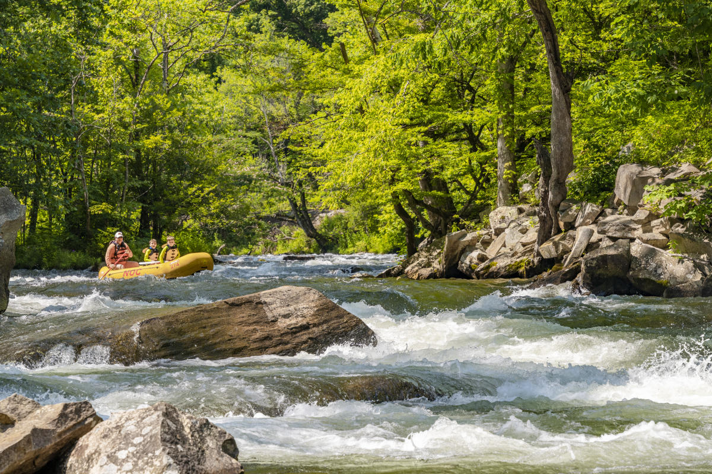
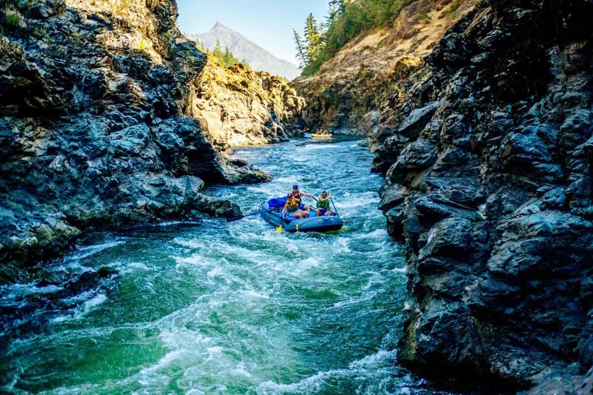
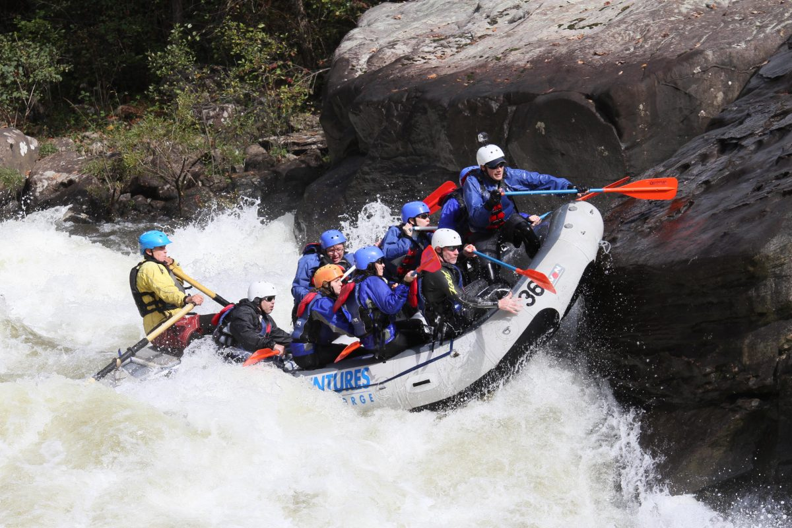

Explore the many surrounding rivers!
Beginner's Paradise
For those new to white water rafting or seeking a family-friendly adventure, the Nantahala River offers a perfect introduction to the world of river rafting. With predominantly Class II and III rapids, the river provides a thrilling yet manageable experience for beginners. Rafters can enjoy the scenic beauty of the surrounding forest while navigating through gentle waves and occasional splashes. This river is an ideal choice for families, corporate outings, or anyone looking to dip their paddle into the excitement of white water rafting without the intensity of more challenging rapids.
Intermediate Challenge
The Rougue River presents an enticing middle ground for rafters seeking an intermediate white water experience. With a mix of Class III and IV rapids, including the famous Rainie Falls, the Rogue River offers an exciting journey through diverse landscapes, including dense forests and rugged canyons. This intermediate difficulty level provides a balance of adventure and accessibility, making it suitable for those with some rafting experience who are ready to step up their game. The Rogue's rapids provide the perfect opportunity for developing rafting skills and building confidence while surrounded by the scenic wonders of the Pacific Northwest.
Advanced Expedition
For the adrenaline junkies and seasoned rafters, the Gauley River stands as the epitome of advanced white water challenges. Renowned for its world-class Class IV and V rapids, the Gauley promises an adrenaline-pumping experience through steep drops and powerful currents. The river's two sections, the Upper and Lower Gauley, offer different levels of difficulty, with the Upper Gauley boasting some of the most intense rapids in the country. Rafters tackling the Gauley River should be prepared for a physically demanding and mentally exhilarating adventure, navigating through a rugged and remote gorge for an unforgettable white water experience.